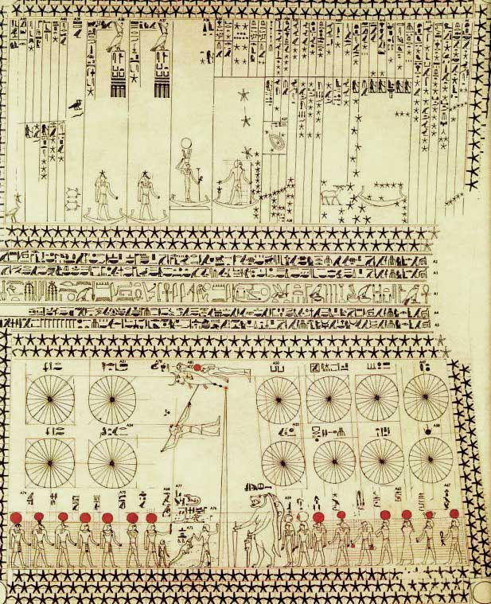
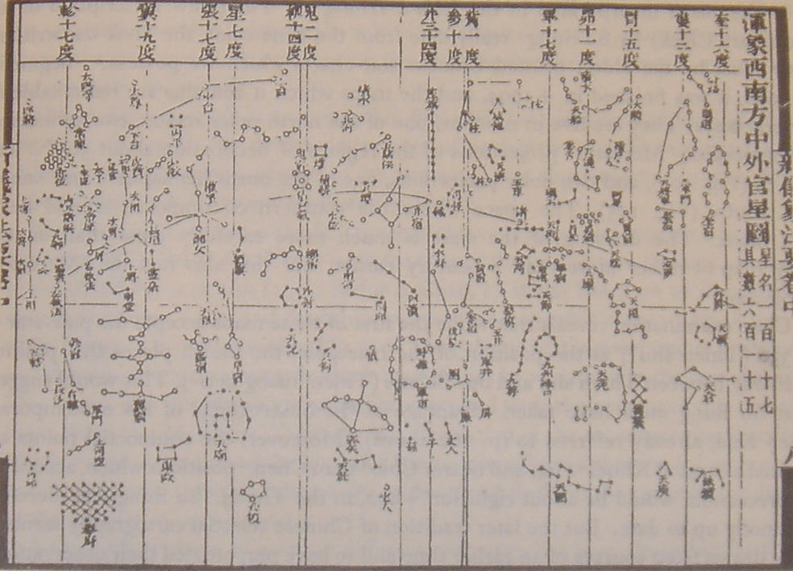
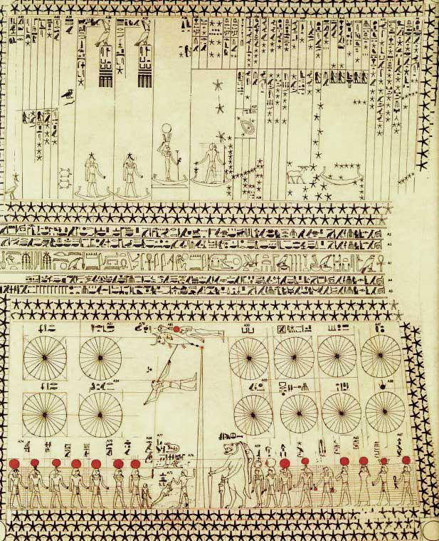
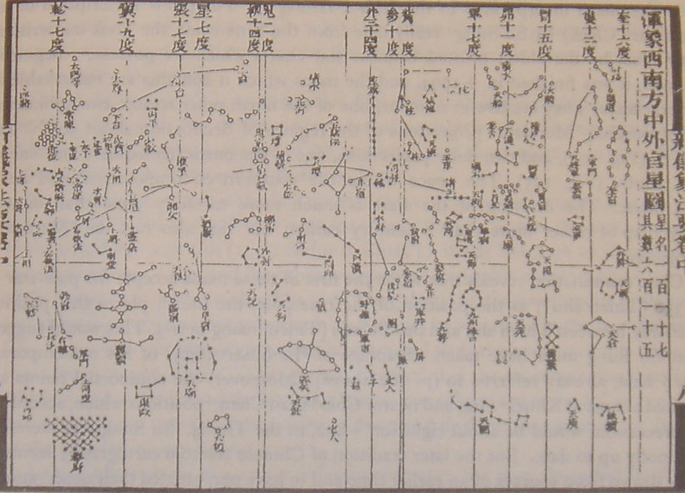
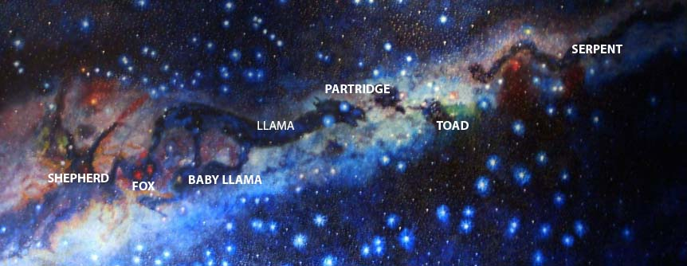

A constellation is an area on the celestial sphere in which a group of visible stars forms a perceived outline or pattern, typically representing an animal, mythological person or creature, or an inanimate object. The origins of the earliest constellations likely go back to prehistory. People used them to relate stories of their beliefs, experiences, creation, or mythology. Different cultures and countries adopted their own constellations, some of which lasted into the early 20th century before today's constellations were internationally recognized.
The recognition of constellations has changed significantly over time. Many changed in size or shape. Some became popular, only to drop into obscurity. Some were limited to a single culture or nation. The 48 traditional Western constellations are Greek. They are given in Aratus' work Phenomena and Ptolemy's Almagest, though their origin probably predates these works by several centuries. Constellations in the far southern sky were added from the 15th century until the mid-18th century when European explorers began traveling to the Southern Hemisphere. Twelve ancient constellations belong to the zodiac (straddling the ecliptic, which the Sun, Moon, and planets all traverse). The origins of the zodiac remain historically uncertain; its astrological divisions became prominent c. 400 BC in Babylonian or Chaldean astronomy.
In 1922, the International Astronomical Union (IAU) formally accepted the modern list of 88 constellations, and in 1928 adopted official constellation boundaries that together cover the entire celestial sphere. Any given point in a celestial coordinate system lies in one of the modern constellations. Some astronomical naming systems include the constellation where a given celestial object is found to convey its approximate location in the sky. The Flamsteed designation of a star, for example, consists of a number and the genitive form of the constellation name. Other star patterns or groups called asterisms are not constellations under the formal definition, but are also used by observers to navigate the night sky. Asterisms may be several stars within a constellation, or they may share stars with more than one constellation. Examples of asterisms include the Pleiades and Hyades within the constellation Taurus and the False Cross split between the southern constellations Carina and Vela, or Venus' Mirror in the constellation of Orion.
Lascaux Caves Southern France
It has been suggested that the 17,000-year-old cave paintings in Lascaux Southern France depict star constellations such as Taurus, Orion's Belt, and the Pleiades. However, this view is not yet generally accepted among scientists.
Mesopotamia
Inscribed stones and clay writing tablets from Mesopotamia (in modern Iraq) dating to 3000 BC provide the earliest generally accepted evidence for humankind's identification of constellations. It seems that the bulk of the Mesopotamian constellations were created within a relatively short interval from around 1300 to 1000 BC. Mesopotamian constellations appeared later in many of the classical Greek constellations.
Ancient Near East
The oldest Babylonian catalogues of stars and constellations date back to the beginning of the Middle Bronze Age, most notably the Three Stars Each texts and the MUL.APIN, an expanded and revised version based on more accurate observation from around 1000 BC. However, the numerous Sumerian names in these catalogues suggest that they built on older, but otherwise unattested, Sumerian traditions of the Early Bronze Age.
The classical Zodiac is a revision of Neo-Babylonian constellations from the 6th century BC. The Greeks adopted the Babylonian constellations in the 4th century BC. Twenty Ptolemaic constellations are from the Ancient Near East. Another ten have the same stars but different names. Biblical scholar E. W. Bullinger interpreted some of the creatures mentioned in the books of Ezekiel and Revelation as the middle signs of the four-quarters of the Zodiac, with the Lion as Leo, the Bull as Taurus, the Man representing Aquarius, and the Eagle standing in for Scorpio.
The biblical Book of Job also makes reference to a number of constellations, including עיש ‘Ayish "bier", כסיל chesil "fool" and כימה chimah "heap" (Job 9:9, 38:31–32), rendered as "Arcturus, Orion and Pleiades" by the KJV, but ‘Ayish "the bier" actually corresponding to Ursa Major. The term Mazzaroth מַזָּרוֹת, translated as a garland of crowns, is a hapax legomenon in Job 38:32, and it might refer to the zodiacal constellations.
Classical antiquity
There is only limited information on ancient Greek constellations, with some fragmentary evidence being found in the Works and Days of the Greek poet Hesiod, who mentioned the "heavenly bodies". Greek astronomy essentially adopted the older Babylonian system in the Hellenistic era[citation needed], first introduced to Greece by Eudoxus of Cnidus in the 4th century BC. The original work of Eudoxus is lost, but it survives as a versification by Aratus, dating to the 3rd century BC. The most complete existing works dealing with the mythical origins of the constellations are by the Hellenistic writer termed pseudo-Eratosthenes and an early Roman writer styled pseudo-Hyginus. The basis of Western astronomy as taught during Late Antiquity and until the Early Modern period is the Almagest by Ptolemy, written in the 2nd century.
In the Ptolemaic Kingdom, native Egyptian tradition of anthropomorphic figures represented the planets, stars, and various constellations. Some of these were combined with Greek and Babylonian astronomical systems culminating in the Zodiac of Dendera; it remains unclear when this occurred, but most were placed during the Roman period between 2nd to 4th centuries AD. The oldest known depiction of the zodiac showing all the now familiar constellations, along with some original Egyptian constellations, decans, and planets. Ptolemy's Almagest remained the standard definition of constellations in the medieval period both in Europe and in Islamic astronomy.
Ancient China
Ancient China had a long tradition of observing celestial phenomena. Nonspecific Chinese star names, later categorized in the twenty-eight mansions, have been found on oracle bones from Anyang, dating back to the middle Shang dynasty. These constellations are some of the most important observations of Chinese sky, attested from the 5th century BC. Parallels to the earliest Babylonian (Sumerian) star catalogues suggest that the ancient Chinese system did not arise independently.
Three schools of classical Chinese astronomy in the Han period are attributed to astronomers of the earlier Warring States period. The constellations of the three schools were conflated into a single system by Chen Zhuo, an astronomer of the 3rd century (Three Kingdoms period). Chen Zhuo's work has been lost, but information on his system of constellations survives in Tang period records, notably by Qutan Xida. The oldest extant Chinese star chart dates to that period and was preserved as part of the Dunhuang Manuscripts. Native Chinese astronomy flourished during the Song dynasty, and during the Yuan dynasty became increasingly influenced by medieval Islamic astronomy (see Treatise on Astrology of the Kaiyuan Era). As maps were prepared during this period on more scientific lines, they were considered as more reliable.
A well-known map from the Song period is the Suzhou Astronomical Chart, which was prepared with carvings of stars on the planisphere of the Chinese sky on a stone plate; it is done accurately based on observations, and it shows the supernova of the year of 1054 in Taurus.
Influenced by European astronomy during the late Ming dynasty, charts depicted more stars but retained the traditional constellations. Newly observed stars were incorporated as supplementary to old constellations in the southern sky, which did not depict the traditional stars recorded by ancient Chinese astronomers. Further improvements were made during the later part of the Ming dynasty by Xu Guangqi and Johann Adam Schall von Bell, the German Jesuit and was recorded in Chongzhen Lishu (Calendrical Treatise of Chongzhen period, 1628).[clarification needed] Traditional Chinese star maps incorporated 23 new constellations with 125 stars of the southern hemisphere of the sky based on the knowledge of Western star charts; with this improvement, the Chinese Sky was integrated with the World astronomy.
 



Historically, the origins of the constellations of the northern and southern skies are distinctly different. Most northern constellations date to antiquity, with names based mostly on Classical Greek legends. Evidence of these constellations has survived in the form of star charts, whose oldest representation appears on the statue known as the Farnese Atlas, based perhaps on the star catalogue of the Greek astronomer Hipparchus. Southern constellations are more modern inventions, sometimes as substitutes for ancient constellations (e.g. Argo Navis). Some southern constellations had long names that were shortened to more usable forms; e.g. Musca Australis became simply Musca.
Some of the early constellations were never universally adopted. Stars were often grouped into constellations differently by different observers, and the arbitrary constellation boundaries often led to confusion as to which constellation a celestial object belonged. Before astronomers delineated precise boundaries (starting in the 19th century), constellations generally appeared as ill-defined regions of the sky. Today they now follow officially accepted designated lines of Right Ascension and Declination based on those defined by Benjamin Gould in epoch 1875.0 in his star catalogue Uranometria Argentina.
The 1603 star atlas "Uranometria" of Johann Bayer assigned stars to individual constellations and formalized the division by assigning a series of Greek and Latin letters to the stars within each constellation. These are known today as Bayer designations. Subsequent star atlases led to the development of today's accepted modern constellations.
Origin of the southern constellations
The southern sky, below about −65° declination, was only partially catalogued by ancient Babylonians, Egyptian, Greeks, Chinese, and Persian astronomers of the north. The knowledge that northern and southern star patterns differed goes back to Classical writers, who describe, for example, the African circumnavigation expedition commissioned by Egyptian Pharaoh Necho II in c. 600 BC and those of Hanno the Navigator in c. 500 BC. However, much of this history was lost with the Destruction of the Library of Alexandria.[citation needed]
The history of southern constellations is not straightforward. Different groupings and different names were proposed by various observers, some reflecting national traditions or designed to promote various sponsors. Southern constellations were important from the 14th to 16th centuries, when sailors used the stars for celestial navigation. Italian explorers who recorded new southern constellations include Andrea Corsali, Antonio Pigafetta, and Amerigo Vespucci.
Many of the 88 IAU-recognized constellations in this region first appeared on celestial globes developed in the late 16th century by Petrus Plancius, based mainly on observations of the Dutch navigators Pieter Dirkszoon Keyser[40] and Frederick de Houtman. These became widely known through Johann Bayer's star atlas Uranometria of 1603.Seventeen more were created in 1763 by the French astronomer Nicolas Louis de Lacaille appearing in his star catalogue, published in 1756.
Several modern proposals have not survived. The French astronomers Pierre Lemonnier and Joseph Lalande, for example, proposed constellations that were once popular but have since been dropped. The northern constellation Quadrans Muralis survived into the 19th century (when its name was attached to the Quadrantid meteor shower), but is now divided between Boötes and Draco.
88 modern constellations
A general list of 88 constellations was produced for the International Astronomical Union in 1922. It is roughly based on the traditional Greek constellations listed by Ptolemy in his Almagest in the 2nd century and Aratus' work Phenomena, with early modern modifications and additions (most importantly introducing constellations covering the parts of the southern sky unknown to Ptolemy) by Petrus Plancius (1592, 1597/98 and 1613), Johannes Hevelius (1690) and Nicolas Louis de Lacaille (1763), who named fourteen constellations and renamed a fifteenth one. De Lacaille studied the stars of the southern hemisphere from 1750 until 1754 from Cape of Good Hope, when he was said to have observed more than 10,000 stars using a 0.5 inches (13 mm) refracting telescope.
In 1922, Henry Norris Russell produced a general list of 88 constellations and some useful abbreviations for them. However, these constellations did not have clear borders between them. In 1928, the International Astronomical Union (IAU) formally accepted 88 modern constellations, with contiguous boundaries along vertical and horizontal lines of right ascension and declination developed by Eugene Delporte that, together, cover the entire celestial sphere; this list was finally published in 1930. Where possible, these modern constellations usually share the names of their Graeco-Roman predecessors, such as Orion, Leo or Scorpius. The aim of this system is area-mapping, i.e. the division of the celestial sphere into contiguous fields. Out of the 88 modern constellations, 36 lie predominantly in the northern sky, and the other 52 predominantly in the southern.
The boundaries developed by Delporte used data that originated back to epoch B1875.0, which was when Benjamin A. Gould first made his proposal to designate boundaries for the celestial sphere, a suggestion on which Delporte based his work. The consequence of this early date is that because of the precession of the equinoxes, the borders on a modern star map, such as epoch J2000, are already somewhat skewed and no longer perfectly vertical or horizontal. This effect will increase over the years and centuries to come.

The Great Rift, a series of dark patches in the Milky Way, is more visible and striking in the southern hemisphere than in the northern. It vividly stands out when conditions are otherwise so dark that the Milky Way's central region casts shadows on the ground. Some cultures have discerned shapes in these patches and have given names to these "dark cloud constellations". Members of the Inca civilization identified various dark areas or dark nebulae in the Milky Way as animals and associated their appearance with the seasonal rains. Australian Aboriginal astronomy also describes dark cloud constellations, the most famous being the "emu in the sky" whose head is formed by the Coalsack, a dark nebula, instead of the stars.
Click on the constellation name